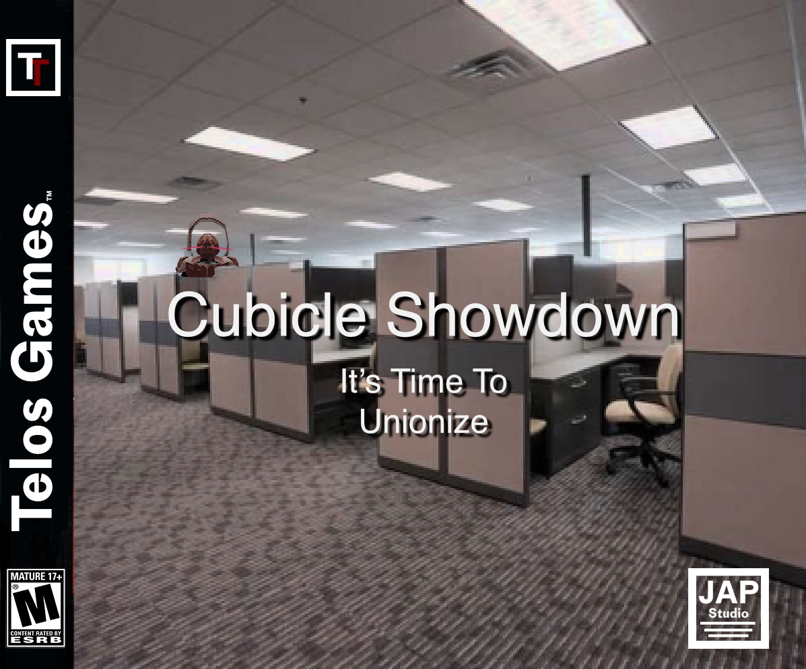

Portfolio
Musikvideo WOHINN - Wohin
Pamier Hilal und Leonard Vee
2024
Gesamtproduktion
Musikvideo für die Single des Künstler WOHINN
Gefilmt mit Z Cam E2 M4
Tokina 17mm
Minolta MC 24mm
Pamier Hilal und Leonard Vee
2024
Gesamtproduktion
Musikvideo für die Single des Künstlers WOHINN
Gefilmt mit Z Cam E2
Meike 28mm
Iscormophot 8/1,5x
Pamier Hilal und Leonard Vee
2024
Gesamtproduktion
Musikvideo für das Cover der Band Willow Parlo
Gefilmt mit Z Cam E2 M4, Z Cam E2, Lumix Gx80
Minolta MC 24mm
Minolta MC 50mm
Fujinon 7,5-105mm
Adam Abdelkader Lenox (ZOUJ), Julie Amouzegar Kim,
Alexander Turovsky, Jan Rosenbauer, Pamier Hilal
2022
Asset Creations & Design, 3D Animation
Dieses Musikvideo ist im Kontext eines viertägigen Visual/Video Jam entstanden

2023 &2025
Digitale Illustration
Illustrationen für Werbung der Sommerfreizeit des Lüttville e.V.

Søren Koswig & Pamier Hilal
2024
Character Design, 3D Modelling, Schnitt, Dozent
Technische Umsetzung und Lehre beim medienpädagogischen Projekt Influence This! vom Konzpiratives Kultur Kollektiv e.V. an der Schule am Perlstieg

Chiara Marcella, Sebastian Ziemann, Pamier Hilal
2024
3D Modelling, Sounddesign, Musik, Recherche, Konzeption
Interaktive Video-Installation welche sich mit den Vergehen der Hagenbeck Familie auseinandersetzt, und ihre Kolonialgeschichte darstellt.

Anton Graeven, Jakob Hersch, Pamier Hilal
2023
3D Modelling, Character Design, Concept, Level Design
Ein Dungeon Crawler welcher im Zuge eines Game Jams entstand. Ein Büroangestellter erkämpft sich seinen Weg bis zur Gründung eines Betriebsrates